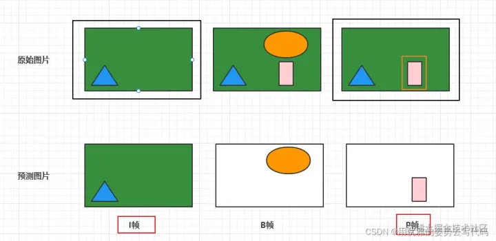

音視頻基礎
编解码原理
graph LR;
A1{麦克风} --> A2[采样帧]
A2 --> A3[音频处理]
A3 --> A4[采样帧队列]
A4 --> A5[音频编码]
A5 --> A6[音频包队列]
A10[音频包队列] --> A11[音频解码]
A11 --> A12[采样帧队列]
A12 --> A13[音频处理]
A13 --> A14{音箱}
B2{时钟} --> A2
B2 --> C2
A6 --> B7{复用器}
C6 --> B7
B7 --> B8(文件\流)
B8 --> B9{解复用器}
B9 --> A10
B9 --> C10
B12{同步控制} --> A13
B12 --> C13
C1{摄像头} --> C2[图像帧]
C2 --> C3[图像处理]
C3 --> C4[图像帧队列]
C4 --> C5[图像编码]
C5 --> C6[图像包队列]
C10[图像包队列] --> C11[图像解码]
C11 --> C12[图像帧队列]
C12 --> C13[图像处理]
C13 --> C14{显示器}顔色空间
RGB
- 自然中通用的，人眼可感知的三原色RGB格式标准
- 主要有RGB888或者RGB565，或者ARGB8888
YUV (也称YCrCb)
- 用途：主要用于视频信号的压缩、传输、存储；向后兼容老式黑白影像。
- 其中 “Y” 表示明亮度（Luminance或Luma），也称灰阶值
- “U" 或 ”V“ 表示色度（Chrominance或Chroma），作用是描述 影像色彩及饱和度，用于指定像素颜色
- 分类
yuv格式非常多，每类下面主要有 planar 和 packed 区别
对于planar的YUV格式，先连续存储所有像素点的Y，紧接着存储所有像素点的U，随后是所有像素点的V。
对于packed的YUV格式，每个像素点的Y,U,V是连续交叉存储的。
- YUV444
占用 8 + 8 + 8 = 24 bit, 3 byte
1 组Y共用 1 组UV
YUV444 \quad \rightarrow \quad
\begin{array}{|c|c|c|}
\hline Y0&Y1&...&...&...&..&..&Y7\\
\hline U0&U1&...&...&...&..&..&U7\\
\hline V0&V1&...&...&...&..&..&V7\\
\hline
\end{array}
YV24 \quad \rightarrow \quad
\begin{array}{|c|c|c|}
\hline Y0&Y1&...&...&...&..&..&Y7\\
\hline V0&V1&...&...&...&..&..&V7\\
\hline U0&U1&...&...&...&..&..&U7\\
\hline
\end{array}
- YUV422
占用 8 + 4 + 4 = 16 bit, 2 byte
2 组Y共用 1 组UV
packed 格式
YUV422（YUVY、YUYV） \quad \rightarrow \quad
\begin{array}{|c|c|c|}
\hline Y0&U0&Y1&V0&Y2&U1&Y3&V1\\
\hline Y4&U2&Y5&V2&Y6&U3&Y7&V3\\
\hline Y8&U4&Y9&V4&Y10&U5&Y11&V5\\
\hline
\end{array}
YUV422（UYVY） \quad \rightarrow \quad
\begin{array}{|c|c|c|}
\hline U0&Y0&V0&Y1&U1&Y2&V1&Y3\\
\hline U2&Y4&V2&Y5&U3&Y6&V3&Y7\\
\hline U4&Y8&V4&Y9&U5&Y10&V5&Y11\\
\hline
\end{array}
planar 格式
YUV422P（YU16、I422） \quad \rightarrow \quad
\begin{array}{|c|c|c|}
\hline Y0&Y1&...&...&...&..&..&Y7\\
\hline Y8&Y9&...&...&...&..&..&Y15\\
\hline U0&U1&...&...&...&..&..&U7\\
\hline V0&V1&...&...&...&..&..&V7\\
\hline
\end{array}
YUV422P（YV16） \quad \rightarrow \quad
\begin{array}{|c|c|c|}
\hline Y0&Y1&...&...&...&..&..&Y7\\
\hline Y8&Y9&...&...&...&..&..&Y15\\
\hline V0&V1&...&...&...&..&..&V7\\
\hline U0&U1&...&...&...&..&..&U7\\
\hline
\end{array}
- YUV420
占用 8 + 2 + 2 = 12 bit, 1.5 byte
4 组Y共用 1 组UV
planar 格式，此两种称为 YUV420P，UV分开存储
YU12 \quad \rightarrow \quad
\begin{array}{|c|c|c|}
\hline Y0&Y1&...&...&...&..&..&Y7\\
\hline Y8&Y9&...&...&...&..&..&Y15\\
\hline Y9&Y10&...&...&...&..&..&Y23\\
\hline Y24&Y25&...&...&...&..&..&Y31\\
\hline U0&U1&...&...&...&..&..&U7\\
\hline V0&V1&...&...&...&..&..&V7\\
\hline
\end{array}
YV12 \quad \rightarrow \quad
\begin{array}{|c|c|c|}
\hline Y0&Y1&...&...&...&..&..&Y7\\
\hline Y8&Y9&...&...&...&..&..&Y15\\
\hline Y9&Y10&...&...&...&..&..&Y23\\
\hline Y24&Y25&...&...&...&..&..&Y31\\
\hline V0&V1&...&...&...&..&..&V7\\
\hline U0&U1&...&...&...&..&..&U7\\
\hline
\end{array}
packed 格式，此两种称为 YUV420SP，同样先存储Y，但UV交叉存储
NV12 \quad \rightarrow \quad
\begin{array}{|c|c|c|}
\hline Y0&Y1&...&...&...&..&..&Y7\\
\hline Y8&Y9&...&...&...&..&..&Y15\\
\hline Y9&Y10&...&...&...&..&..&Y23\\
\hline Y24&Y25&...&...&...&..&..&Y31\\
\hline U0&V0&U1&V1&U2&V2&U3&V3\\
\hline U4&V4&U5&V5&U6&V6&U7&V7\\
\hline
\end{array}
NV21 \quad \rightarrow \quad
\begin{array}{|c|c|c|}
\hline Y0&Y1&...&...&...&..&..&Y7\\
\hline Y8&Y9&...&...&...&..&..&Y15\\
\hline Y9&Y10&...&...&...&..&..&Y23\\
\hline Y24&Y25&...&...&...&..&..&Y31\\
\hline V0&U0&V1&U1&V2&U2&V3&U3\\
\hline V4&U4&V5&U5&V6&U6&V7&U7\\
\hline
\end{array}\tag{android默认格式}
补充
stride：跨距，为了提高寻址效率，对分辨率宽（每行）计算内存时做32位对齐操作。
plane：一般是以luma plane、chroma plane的形式出现，其实就是luma层和chroma层，就像RGB，要用三个plane来存。
I\P\B帧
参考
-
I帧或关键帧或帧内帧（I-frame or Key-Frame or Intra-frame）仅由帧内预测的宏块组成。
I帧中的每个宏块只能在同一帧内匹配其他宏块，这意味着，它只能利用帧内“空间冗余”来进行压缩。空间冗余是一个术语，用来指单个帧的像素之间的相似性。
- P帧代表预测帧，除了空域预测以外，它还可以通过时域预测来进行压缩。P帧参考前面的帧进行运动估计。
- B帧可以参考在其前后出现的帧。由于B帧可以参考和插入在它之前和之后发生的两个（或更多）帧（在时间维度上），所以它可以显著降低帧的大小，同时保持视频质量。B帧能够利用空间冗余和时间冗余（未来的帧和过去的帧），这使得它在视频压缩中非常有用。B帧是资源密集型。
